Marvel Champions: Digital Edition · Release report
Earth's Mightiest Patch
v0.49.0 · release PR
#798 after v0.48.0
(Nov 17) Android · Web · Windows · macOS · Linux Nov 18, 2026 All releases ·
Español
★
Achievement unlockedAvengers Assembled
A misclick or a bug no longer has to cost you the game. Undo now reaches past the start of your turn, a
draw, a reveal and the villain phase, and Pause has a Manual adjust screen to correct the table by hand. Both
came from @sgaon42's request, and a game you change that way simply stops counting toward your stats. Pause's
search now finds any setting, every search box forgives typos, schemes can be drawn large, and cards speak
Spanish. @bluefireF5ran's ten reports fix Madame Web, Wolverine's Claws, Silk Sense and more, and Giant
Strength, One Way or Another and Morphogenetics are fixed too.
How far Undo reaches
Move 1
one move per press, back to the first move of the game, if you want to go that far.
Undo choices
3
Allow, Warn or Off, under Settings ▸ Gameplay.
Reports answered
15
from six players, ten of them from @bluefireF5ran.
Undo past your turn
Issue #791 · PR #793
★
Achievement unlockedThe Time Stone
Undo used to stop at the start of your turn or the last card you drew or revealed. Now, when the ordinary
Undo has nothing left, each press goes back one more move: past a draw, a reveal, another hero's turn and the
villain phase, all the way to the first move of the game.
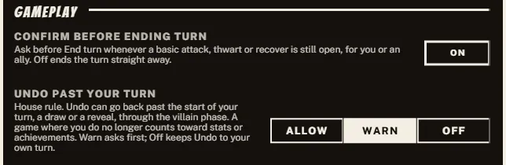
Settings ▸ Gameplay ▸ Undo past your turn
Allow, Warn or Off
Warn, the default, shows a "This game won't count" box once per game before Undo goes that far.
Allow goes back without asking.
Off keeps Undo to your own turn, as it was.
Same draw, same game
Ending your turn is taken back together with the villain phase it led to. A rewind replays the stored game,
so making the same move again gives the same draw: Undo is for a misclick, not a reroll.
Jump to a moment
Pause ▸ Jump to a moment follows the same setting, so you can pick a line in the log from an earlier
turn and go straight back to it.
Manual adjust
Issue #791 · PR #793
★
Achievement unlockedReality Warper
Pause ▸ Manual adjust corrects the table by hand. Pick what to correct, a hero, the villain, a minion, a
scheme, a card in play or in your hand, then the change. Every correction is a line in the game log, so saves,
rewinds and replays keep it.
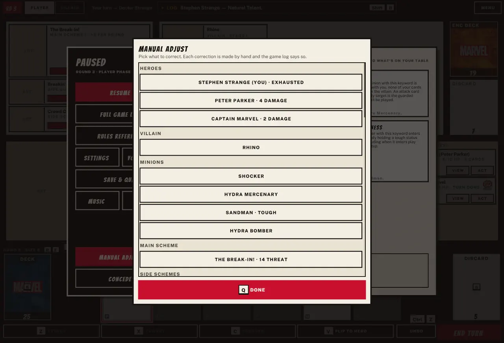
Pick what to correct
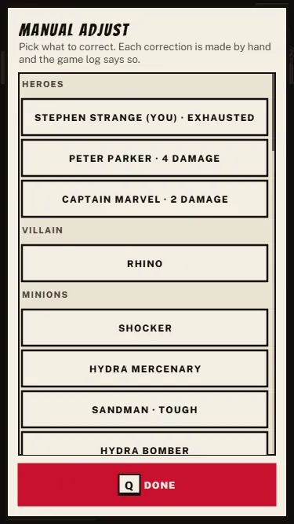
On a phone, under Pause's Reference
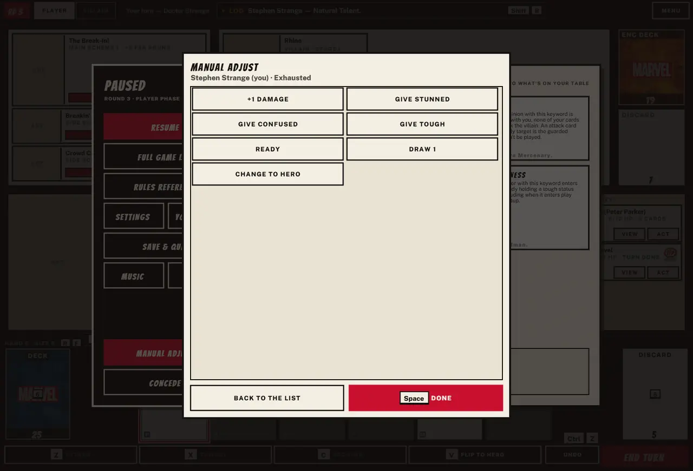
A hero's adjustments
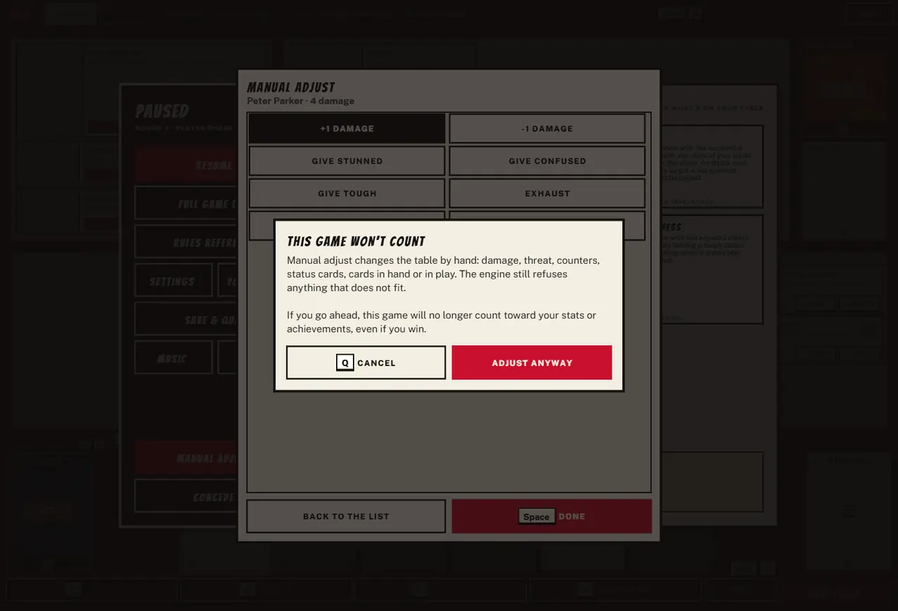
The warning before your first adjustment
What you can correct
Damage, threat and counters, one at a time, up or down.
Stunned, confused and tough, given or removed.
Exhaust or ready a card, discard one from play or from hand, draw 1.
Change form, to hero or to alter-ego.
The rules still apply
A correction opens no responses of its own, but the game's standing rules follow it: a minion at 0 hit
points is defeated, a scheme at its target completes. Nothing can be adjusted while a choice is open.
Fair stats, either way
Issue #791 · PR #793
★
Achievement unlockedThe Honor System
A game you adjust or undo past your turn is marked adjusted, and it stays marked. Achievements, unlocks,
Extras, your stats, deck insights and global stats leave it out, so a win there is still a game you played, just
not one that counts.
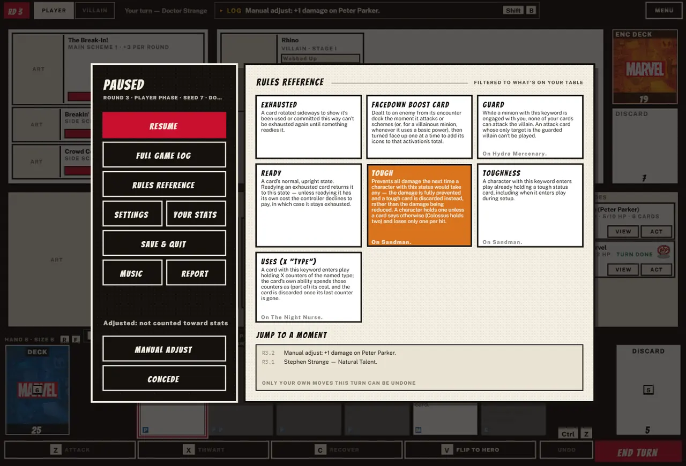
Pause says the game is adjusted, and the log names the correction
Past games still lists an adjusted game, and the mark carries through rewinds, reloads and device sync.
An exported game log, a shared replay and an issue report all say when a game was adjusted.
Find any setting from Pause
Issue #800 · PR #801
★
Achievement unlockedHeimdall Sees All
Type in Pause's search and the results take over the menu, grouped Settings first, then Rules, Pause's
own Reference rows and more. A setting changes right there: "undo" shows Undo past your turn with Allow, Warn
and Off.
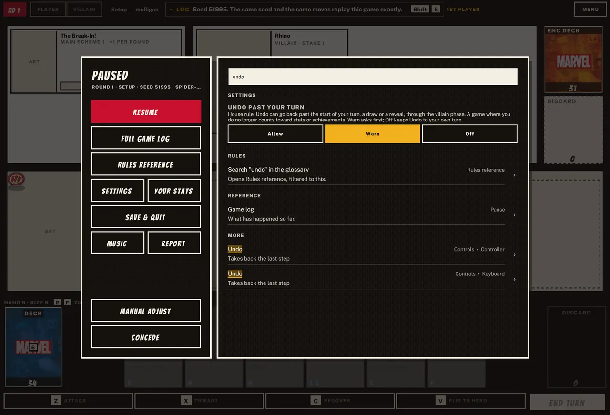
"undo": the setting, changeable in place
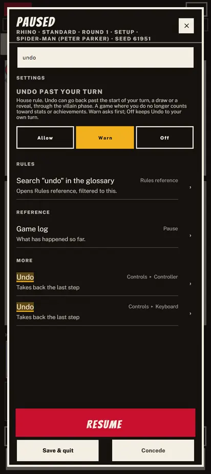
On a phone, the results fill the sheet
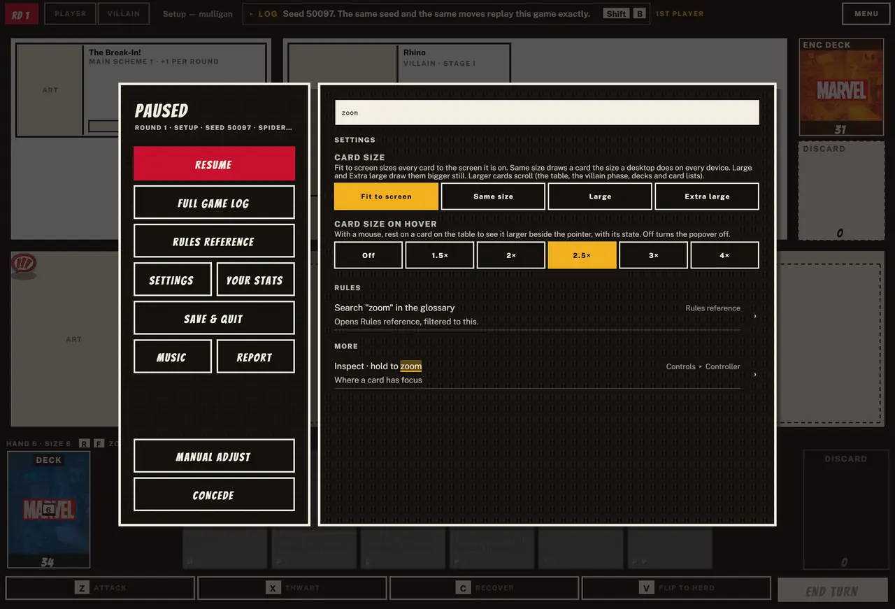
"zoom", a synonym, finds Card size
Every search forgives
Synonyms: "rewind" finds Undo past your turn, "mute" finds the sound rows.
Accents, case, typos and dropped letters don't matter: "crd siz" finds Card size, in every search
box in the game.
The hero roster, the Rules glossary, the rulebook reader and the campaign card picker now search the same
way as Settings, Pause and the deck builder.
Tablets and desktop get Pause's search field too.
Schemes you can read
Issue #808 · PRs #831, #834
★
Achievement unlockedGiant-Size Schemes
A player on Discord found the scheme cards too small to read. Two new settings in Settings ▸ Cards, both
off by default, draw the schemes large without making the table grow or scroll.
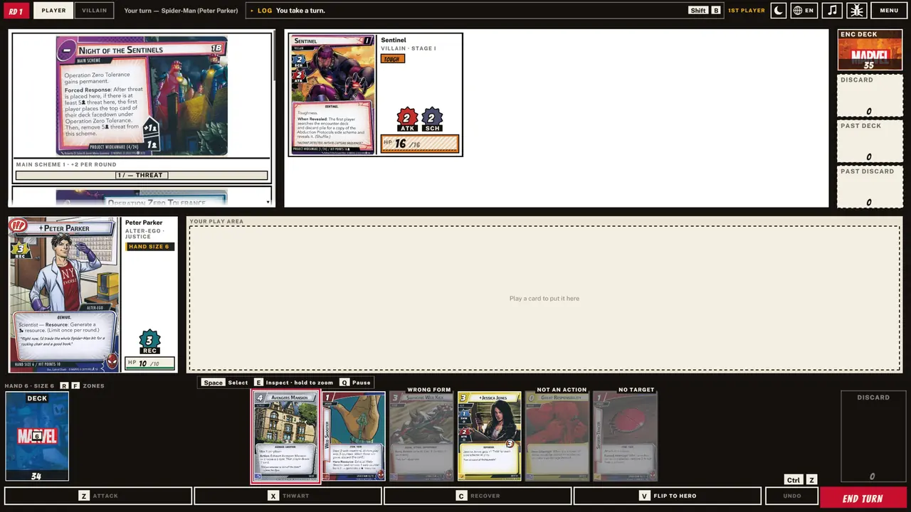
Large schemes: every scheme a large card, the panel scrolls
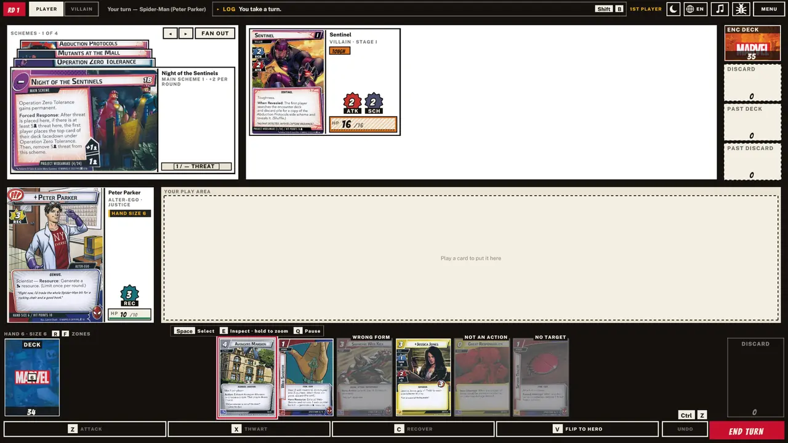
Stack schemes: one large card in front, the names behind
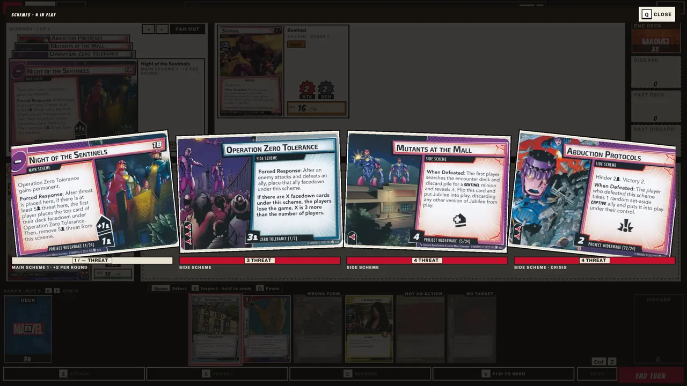
Fan out with no background, the default
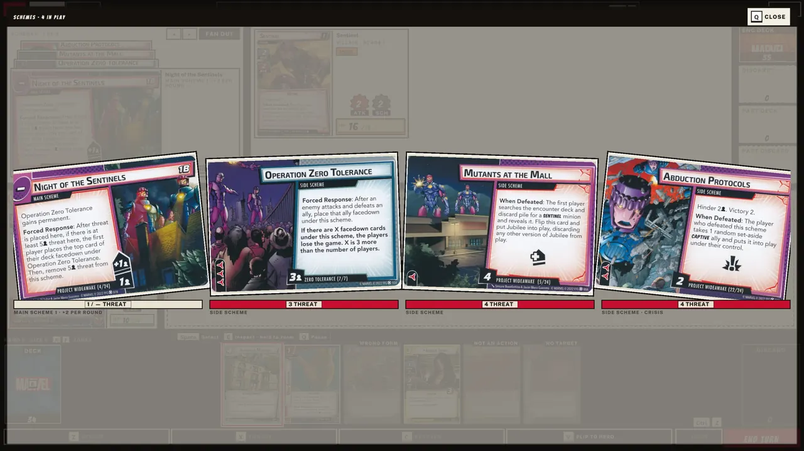
The same fan over a 50% background
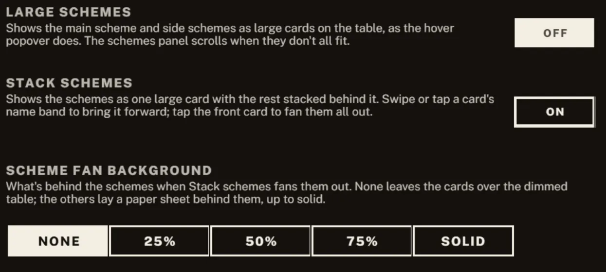
The three new rows in Settings ▸ Cards
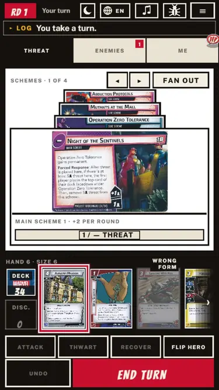
The stack on a phone
Large schemes
The main scheme and every side scheme are drawn the way the hover shows them, without hovering. When
they don't all fit, only the schemes panel scrolls.
Stack schemes
Swipe, tap a name or use ◂ ▸ to bring a scheme forward, and tap the front card to fan them all out.
Scheme fan background sets the sheet behind the fan, from None to Solid.
When a prompt can pick a scheme hidden behind the stack, the panel lists every scheme, so a
controller or keyboard can reach it too, and the D-pad can now move to a scheme scrolled out of view
in any scheme list.
Cards that speak Spanish
Issue #391 · PR #835
★
Achievement unlockedThor's Allspeak
With the game in Spanish, the Inspect sheet shows each card's Spanish name, rules text and flavor, and
deck lists show Spanish titles and sort by them. The text comes from MarvelCDB's Spanish card database.
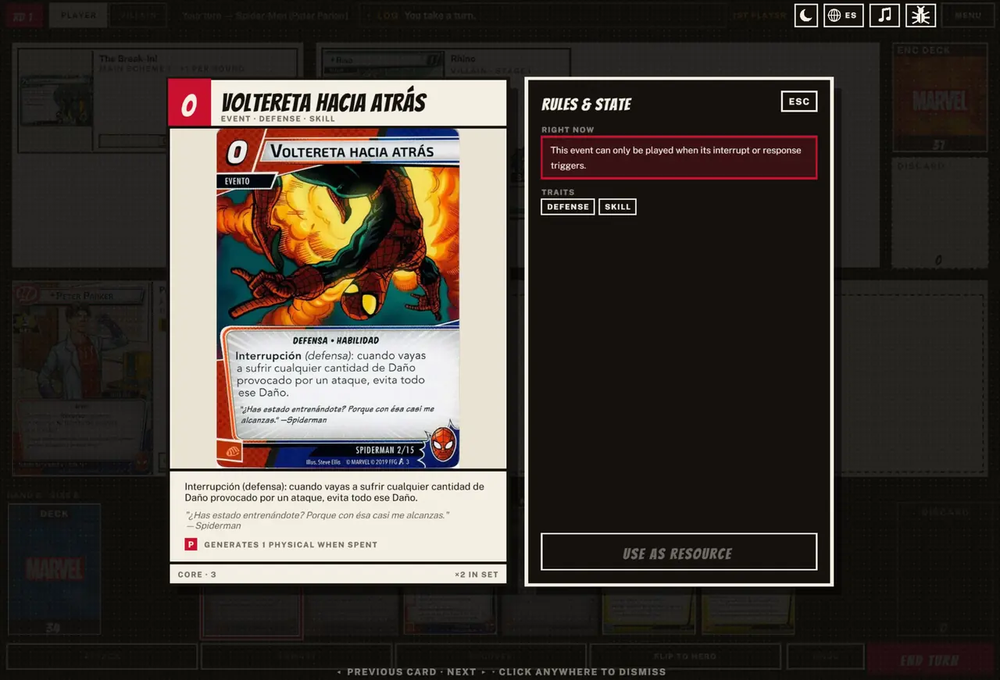
Inspect in Spanish: Voltereta hacia atrás (Backflip)
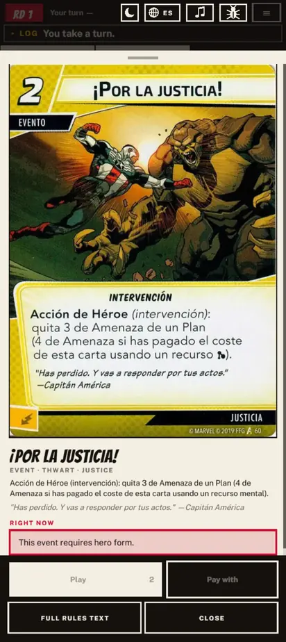
On a phone: ¡Por la justicia! (For Justice!)
About 4,000 card faces show Spanish text. Any card not translated yet stays in English.
A face whose Spanish doesn't match its English, or a card with errata, keeps the English text, so what you
read is always what the game plays.
Ant-Man's Giant Strength asked to be used on every form change, even when he changed to Tiny hero form.
Now it is offered only after changing to Giant hero form. Ant-Man's Helmet had the same problem and
gets the same fix: heal 2 only after Giant, draw 1 only after Tiny.
#795 · reported by @javgoro
One Way or Another needs a side scheme
Nebula's One Way or Another drew 3 cards even when the search found no side scheme in the encounter deck.
Spider-Ham's copy shared the bug.
Now it draws only when the search finds one, and the side scheme it finds is always taken. The deck
is still shuffled either way.
Ruling, October 21, 2024: a search that finds nothing means the cost wasn't paid.
#804 · reported by Gooffrey [KRBY] on Discord
Morphogenetics gives you the event back, for real
Ms. Marvel thwarts the last threat, plays Turn the Tide and returns it to her hand with Morphogenetics. The
game wouldn't offer Turn the Tide again for that same thwart.
Now an event she returns to hand is offered again off the same trigger, so a second Turn the Tide
deals another 3, and Wiggle Room can answer the same attack twice. A card in play that used its ability is
still offered only once.
FFG ruling (Ms. Marvel): a returned Wiggle Room can be played again "the same as if you had 2 copies".
#806 · requested by @andy-xxvii27
Find cards by their Spanish name
With the game in Spanish, the card search in the deck builder and on the Decks screen matches each card's
Spanish name as well as its English one.
"La Balsa" finds The Raft, accents or not, from 1,880 Spanish names taken from MarvelCDB.
@bluefireF5ran played Spider-Verse and Wolverine decks hard and sent ten precise reports. Every one is
fixed in this release.
Cards that work as printed
Madame Web counts every Web-Warrior card you control, not only characters (#809).
Deathunt 9000's boost gives tough to the enemy it boosts (#815).
Across the Spider-Verse needs a Web-Warrior ally in your discard pile, and only offers its repeat
to a player who has one (#818).
Silk Sense and other "after you defeat" cards trigger only when your identity, or an event,
resource or upgrade of yours, makes the defeat, not an ally (#817).
Change of Fortune triggers when Psychic Misdirection's redirected damage defeats an enemy (#817).
Timing, costs and the log
A repeated Berserker Barrage no longer keeps Wolverine's Claws' piercing (#811).
When Wolverine's Claws' cost eliminates Wolverine, the chosen event is still played and its attack
lands (#816).
White Fox and other "after this is discarded from your deck" responses are offered when the same
discard empties the deck (#810).
Clarity of Purpose's cost damage is dealt while paying, before the card it pays for (#813).
The log calls a cancelled thwart a thwart (#812), and names who controls an upgrade on another player's
hero (#814).
Also in v0.49.0
Issues #805, #807, #829 · PRs #819, #830, #832
★
Achievement unlockedRead the Fine Print
Crossbones starts with an Experimental Weapon, revealed when Attack on Mount Athena 1B comes into
play, and in The Rise of Red Skull campaign every Experimental Weapon recorded in the log is shuffled into
scenarios 2 to 5.
Shawarma, from The Mad Titan's Shadow campaign, shows its printed "Max 1 per deck." and the deck
builder allows one copy, not three.
Kingpin's Public Support (High) replaces a boost card only when it can remove the full 1 per hero
support counters. FFG's rules specialist answered by email that the whole effect has to resolve, so with
fewer counters Kingpin is given the boost card and the counters stay.
Thank you!
Keep the ideas and reports coming from Pause ▸ Report a problem, a GitHub issue or the community Discord.
@sgaon42
Asked for a manual mode and Undo settings, #791, which became Undo past your turn and Manual
adjust.
GarethMagis
Reported on Discord that Giant Strength fired in Tiny form, #794.
@javgoro
Reported One Way or Another drawing after a search that found nothing, #795.
@bluefireF5ran
Sent ten reports, #809 to #818, from Madame Web's count to Wolverine's Claws, and every one is
fixed in this release.
@andy-xxvii27
Asked for card search by Spanish name, #806.
Gooffrey [KRBY]
Reported on Discord that Morphogenetics couldn't replay Turn the Tide off the same thwart, #804.
Code shipped
Since v0.48.0
Pull requests
20
merged into main.
Files changed
350
across the engine, the cards, the client and this report.
Lines added
271,471
most of them MarvelCDB's Spanish card data, cached in the repo.
Lines removed
649
code the new Undo and adjust paths replaced.
The soundtrack is AI-generated with Gemini. The sound effects are royalty-free sounds from assorted websites.
Controller art: Xbox One controller by Akshay Kumar (ArtStation), PlayStation controller by Uttam Das
(Vecteezy), Switch icon by Sweet Farm (Noun Project).